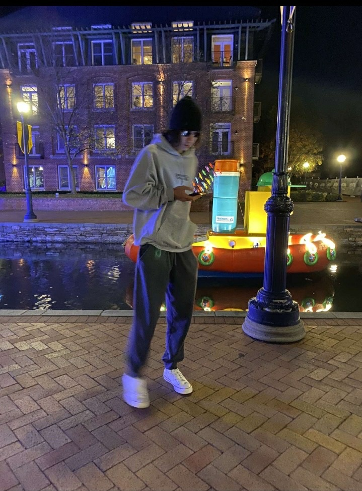

Samuel Reagan

Profile
- Ability to multi-task, prioritize and complete tasks in timely manner
- Ability to learn quicklu and apply principles learned
- Strong verbal communication
- Competent in time management and organization with attention to detail
- Ability to take direction and execute team objectives
- Experience working in a team-oriented environment
Education
Frederick Community College
MSSC Certified Logistics Technician
Frederick Community College
AAS in STEM Technology, Area of Concentration: Information Technology Specialist
Work Experience
The Lodge at Homewood
Frederick, Maryland
Waiter/Cashier
Nov 2023 - March 2024
- Managed the POS system to calculate and process payments accurately
- Collaborated with kitchen staff to ensure timely delivery of orders
- Managed resident inquiries, concerns and complaints professionally and promptly
- Assisted in tasks to ensure a clean, sanitized and safe working environment
- Demonstrated a commitment to providing excellent customer service for a positive and enjoyable
dining experience
Buckinghams Choice
Adamastown, Maryland
Dining Room Server
August 2020 - February 2023
- Maintained proper dining room set up
- Responsible for handling all food and beverage in accordance with sanitary procedures and standards
- Assisted with training team members
- Monitored appropriate checklist in support of the dining area cleanliness, readiness standards
- Assisted in tabletop inventories maintenance
- Created a positive restaurant style environment for residents and guests
Skills
Other